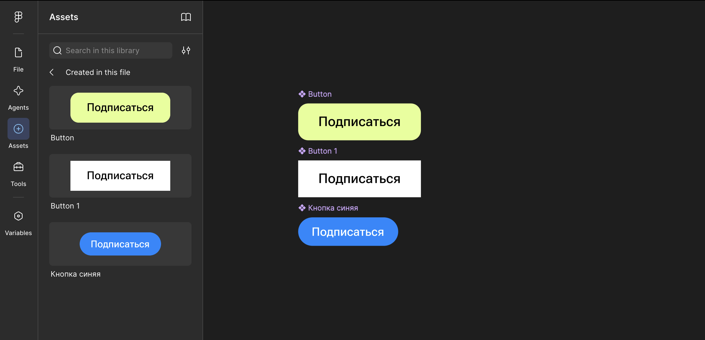
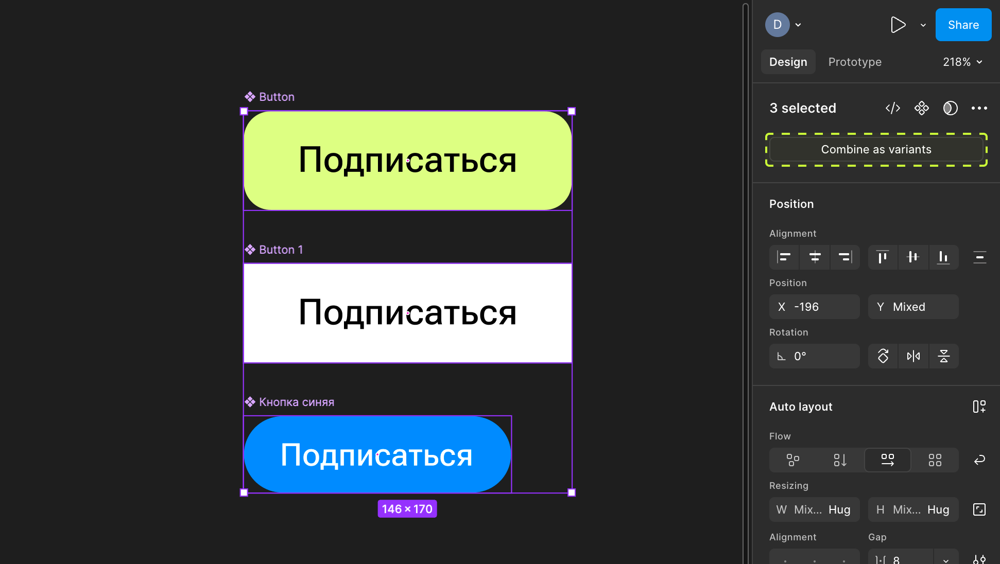
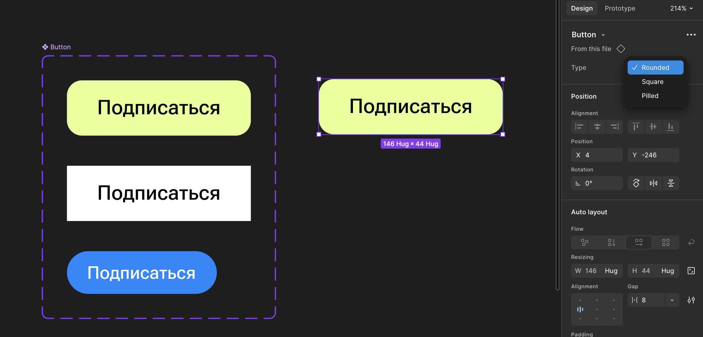
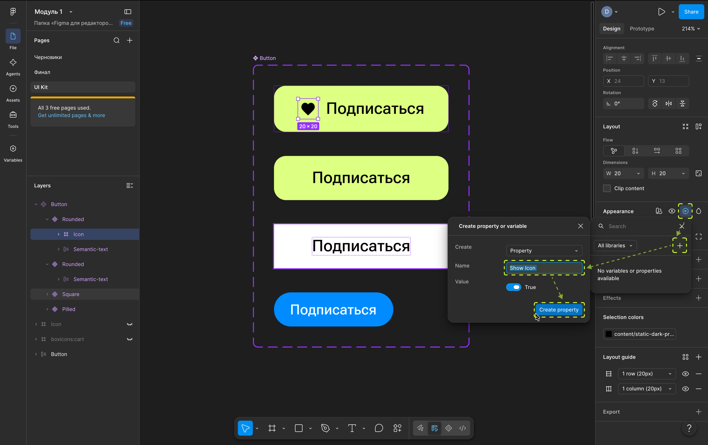
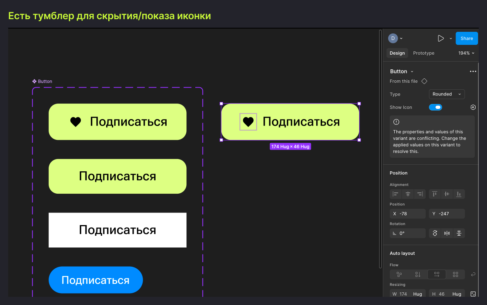
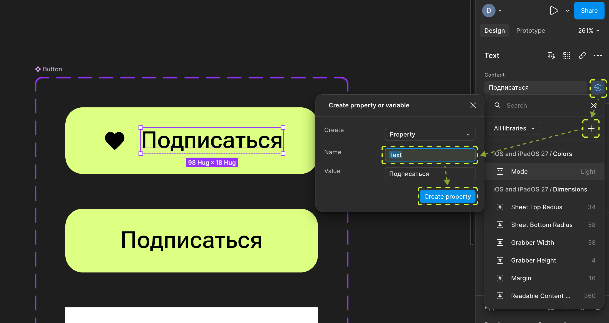
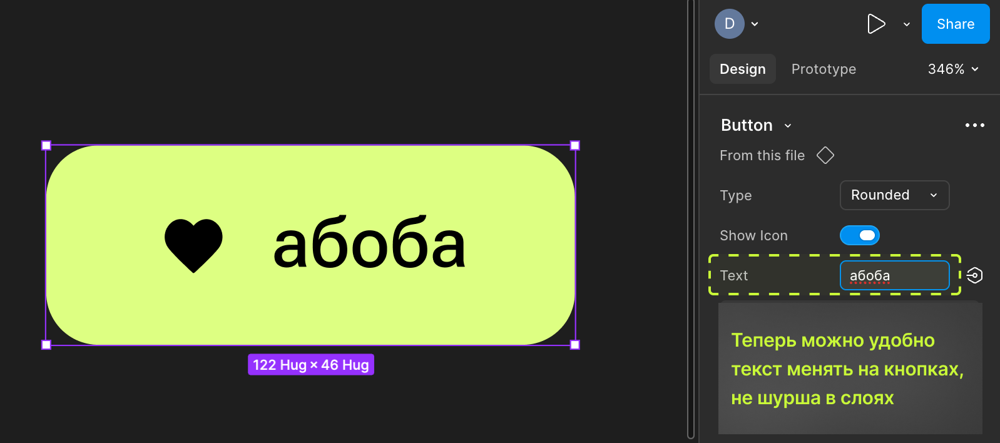
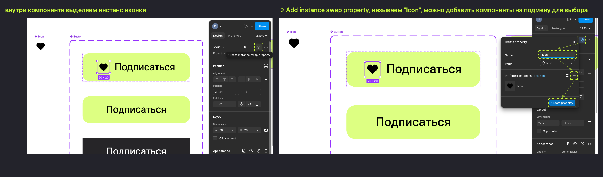

В прошлом уроке мы собрали простую кнопку-компонент. Но что если у кнопки есть состояния — обычная, наведение, нажатая, отключённая, — и вариации — с иконкой и без, маленькая и большая? Плодить 16 отдельных компонентов на все комбинации — плохая идея. Для этого в Фигме есть варианты и свойства, и это последний урок первого модуля.
План урока
- Проблема: 20 отдельных компонентов кнопки — это плохо
- Variants: объединяем состояния в один компонент
- Property 1: Variant property
- Property 2: Boolean property
- Property 3: Text property
- Property 4: Instance swap property
- Живой пример: собираем «идеальную» кнопку со всеми свойствами
- Итог модуля 1 + домашнее задание
1. Проблема: 20 отдельных компонентов кнопки — это плохо

Если каждое состояние и размер кнопки — отдельный самостоятельный компонент, происходит две проблемы: вкладка Assets превращается в свалку из десятков похожих названий, и любое изменение (скажем, радиус скругления) приходится вносить в каждый компонент по отдельности. Решение — объединить их в один компонент с переключаемыми вариантами.
2. Variants: объединяем состояния в один компонент

Выделите несколько компонентов, которые являются вариациями одного и того же элемента (например, Button/Default, Button/Hover, Button/Disabled) → правой кнопкой → Combine as variants. Figma объединяет их в один родительский компонент — Component Set — с фиолетовой пунктирной рамкой, внутри которого каждый вариант остаётся отдельным «дочерним» компонентом.
Инстанс такого компонента на панели Design получает выпадающий список для переключения между вариантами — вместо того чтобы удалять старую кнопку и тянуть новую с другим состоянием:

3. Property 1: Variant property
Каждая ось вариаций внутри Component Set — это Variant property. Например, ось State со значениями Default / Hover / Disabled и ось Size со значениями Small / Large — тогда у вас будет 3×2 = 6 вариантов внутри одного компонента, и у инстанса — два отдельных выпадающих списка на панели Design(как на выпадашках в картинках выше): выбрать состояние и выбрать размер независимо друг от друга.
Именование значений имеет значение (простите за каламбур) — используйте понятные слова: Default, Hover, Pressed, Disabled, а не Вариант 1, Вариант 2.
4. Property 2: Boolean property

Boolean property — переключатель да/нет для показа или скрытия конкретного слоя внутри компонента. Пример: у кнопки есть иконка слева от текста — добавляем булево свойство Show icon, привязанное к видимости слоя иконки. У инстанса на панели Design появляется тумблер — включить/выключить иконку без переключения на другой вариант.

5. Property 3: Text property

Text property — позволяет редактировать текст внутри инстанса через специальное поле на панели Design, а не двойным кликом по самому тексту на холсте. Это особенно удобно, когда компонент используется в другом, более сложном компоненте (вложенный инстанс) — тогда прямого доступа к тексту внутри может не быть, а поле свойства — всегда доступно.
Для UX-редактора это, пожалуй, самое полезное свойство из всех — быстро менять тексты кнопок, лейблов и подписей, не «нырять» внутрь вложенной структуры.

6. Property 4: Instance swap property

Instance swap property применяется, если внутри компонента находится инстанс другого компонента (например, иконка — тоже отдельный компонент). Свойство instance swap позволяет через панель Design подменить одну иконку на любую другую из библиотеки, не заходя внутрь структуры и не удаляя/перетаскивая слои вручную.
Пример: кнопка со свойством Icon — на панели Design выпадающий список со всеми иконками библиотеки, выбрали нужную — иконка внутри кнопки подменилась.
Итог модуля
Мы прошли путь от установки до полноценного гибкого компонента со всеми типами свойств — установка, интерфейс, текст, цвет, стили, сетки, автолейаут и компоненты в двух частях. Это фундамент, на котором строится вся дальнейшая работа с интерфейсами. Второй модуль курса — уже не про инструменты, а про то, как думать как дизайнер: интуитивность, эстетика, поведение пользователей и тестирование решений.
В целом компоненты — сложная тема, но давай отработаем материал на вопросах в тесте)
Домашнее задание:
- Объединить 2–3 состояния своей кнопки в Variants через Combine as variants.
- Добавить к компоненту кнопки: Boolean property для иконки, Text property для текста.
- Если есть время — добавить компонент-иконку и подключить его через Instance swap property.
- Разместить 3–4 инстанса на макете и настроить у каждого разные свойства через панель Design, не трогая слои на холсте руками.
Полезные материалы
- Компоненты в Figma: как они работают и для чего нужны (Яндекс Практикум)
- Компоненты в Figma: что это, зачем нужно и как работает (Skillbox)
- Гайд по сборке компонентов (Consta)